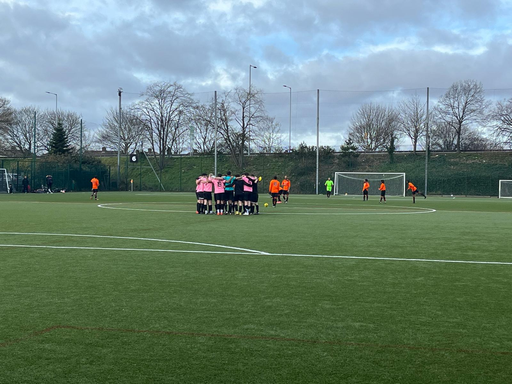
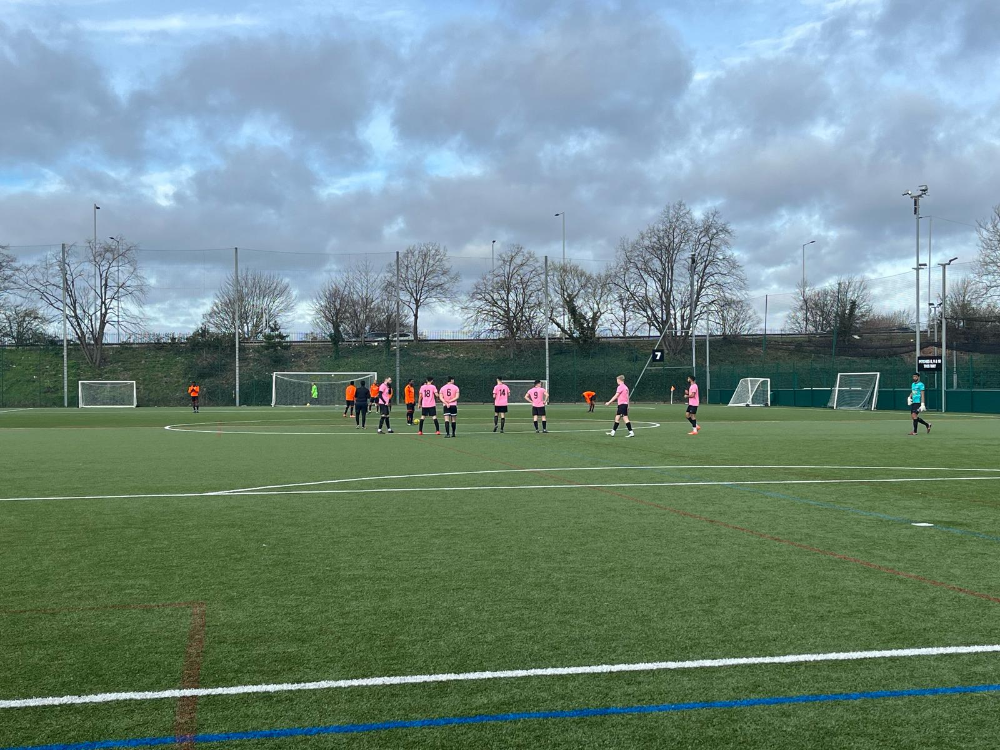
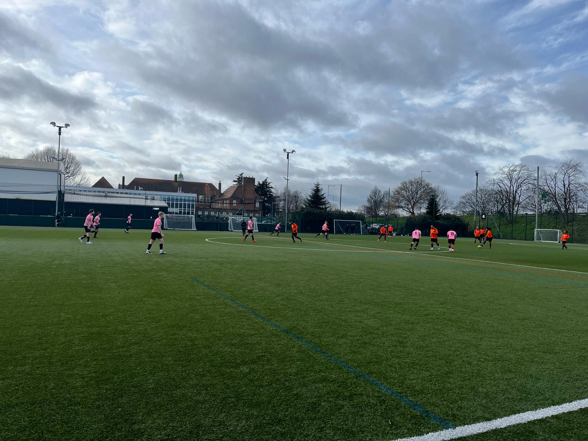
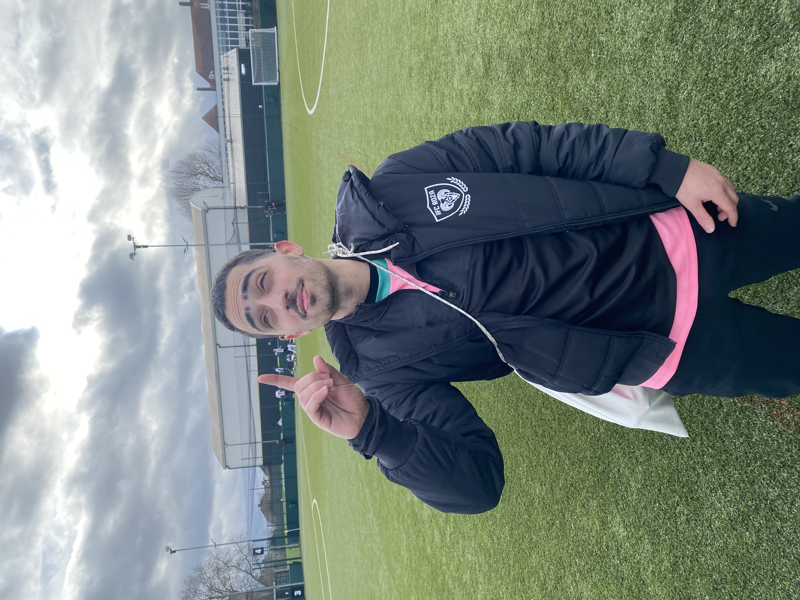

Match Report - Continental (H)
It was a gloomy, windy home fixture for The Rose - the visitors today, Continental. Roza began today’s fixture at 3rd in the league and with the opportunity to leapfrog AFC Oakwood, we were eager to make a statement to the rest of the league.
Starting XI: Rajan Ranu; Rees Colgan, Giorgio Koullas, Chris Johnson, Jake Koumi; Michael Georgiades, Danny Smith, Saj Rajaratnam; Iddo Razin, Steph Savva, Alex Andreou
A strong first 10 minutes was characterised by dynamic and slick Rozaball. A theme of this period was the Koumi-Andreou link up on the left flank. As we approached the 10-minute mark, Andreou’s quick feet and lightning pace proved too much for the Continental right back, as he drove to the byline and pulled back for his partner in crime, Savva, who, received the ball on the edge of the box, cut in past Conti’s centre back, and fired into the goalkeeper’s left top corner. 1-0 Roza.

As we approached 20 minutes, Continental’s game plan became more clear - what can only be described as route 1 football was in full effect. Employing a 442 formation that Sean Dyche himself would’ve been proud of, the direct goal kicks were giving Johnson and Koullas plenty to think about. In the main, our two centre halves were dealing with these long balls well, but Conti were wasteful with the few chances they did get.
As we approached the midway point of the first half, the Continental players would’ve been wishing they continued their direct playing style, as a rare abandonment of this strategy found their centre backs trying to play out on the edge of their box. The Roza front 3 were under strict instruction by Mike Anastasiou to press high, and press high they did, with Andreou stealing the ball from their centre back. As he ran towards goal, the Continental centre back, in a desperate attempt to make up his error, clipped his heels - Penalty Roza! The ever composed Razin stepped up with a quality finish from 12 yards, sending the keeper the wrong way. 2-0 Roza.

The midfield battle was only being won by one team, and the midfield general Georgiades found himself on top when dualing with the Continental midfield. This, coupled with Saj Rajaratnam and Danny Smith’s quality, control and work rate proved too much for Conti to handle and, on several occasions, culminated in Razin receiving the ball out wide from the pair in acres of space. Some horrendous officiating led to numerous poor offside decisions against Razin, who was looking to add to his tally in search of a consecutive Roza golden boot. With half an hour played, the luck was eventually on Razin’s side, as he flicked on a loose ball over the Conti centre backs’ heads, into the path of Roza talisman Savva on the edge of the box, who rifled home on the volley leaving the keeper helpless. 3-0 Roza.
The last 10 minutes of the first half was characterised by a catalogue of refereeing errors, the first of which being when the Conti number 10 picked the ball up on the edge of the Roza box dribbled through a few defenders, and eventually fell to the ground with faintest of Roza touches, this one coming from Georgiades. The referee pointed to the spot without hesitation, much to the discontent of the players and the faithful watching along from the sidelines. The Conti number 9 stepped up, sent Ranu the wrong way and brought one back to make it 3-1. Then, on the stroke of half time, a long ball from Conti found its way to the edge of our box, bouncing high and proving to be a problem for even the ever reliable Koullas and Johnson. Johnson, with Conti’s striker on his tail attempted to shield the ball back to Ranu, but the striker managed to wiggle in between the two, only to then be fouled by Ranu, in a series of unfortunate events. The referee of course paid no attention to the tugging on Johnson’s shirt prior, and pointed to the spot once again for a third penalty of the game. The penalty once again sent Ranu the wrong way - 2 penalties, 2 goals, the Roza just one in front. Conti came close to getting an equaliser right before the half-time whistle, when their captain nearly added a hat-trick with a free-kick which struck the Roza crossbar.

The Conti penalty on the stroke of half time significantly changed the half time talk from Roza manager Anastasiou, and amidst the clear frustration in the Roza players’ faces coming in at just 3-2, Mike reminded the players of the things that allowed them to take a 3 goal lead and to remain calm.
As the second half commenced, The Rose looked sluggish, and Conti were clearly the ones with the bit between their teeth, looking to grab the game by the scruff of the neck. Roza uncharacteristically didn’t seem to be able to hold onto the ball for long and despite an outside the box thunderbolt from Saj and a typical Andreou run into the box that finished in a low driven shot, the Roza couldn’t add to their tally as a result of some great goalkeeping. There were also a number of other chances that could’ve restored a 2 goal lead including Danny Smith’s lobbed effort which didn’t quite get enough lift, and Rajaratnam’s one-on-one which was smothered by the Conti goalkeeper. It stayed at 3-2 however, and it was therefore not the calm ending to the game that Roza would have hoped for.
Iddo Razin was Sunday’s Man of the Match, scoring from the spot and getting an assist alongside continuous hard-work at both ends of the pitch.

In a game that was characterised by Roza grit, poor officiating and contrasting styles of play, The Rose managed to get 3 points and rise to second in the league.
#UTR